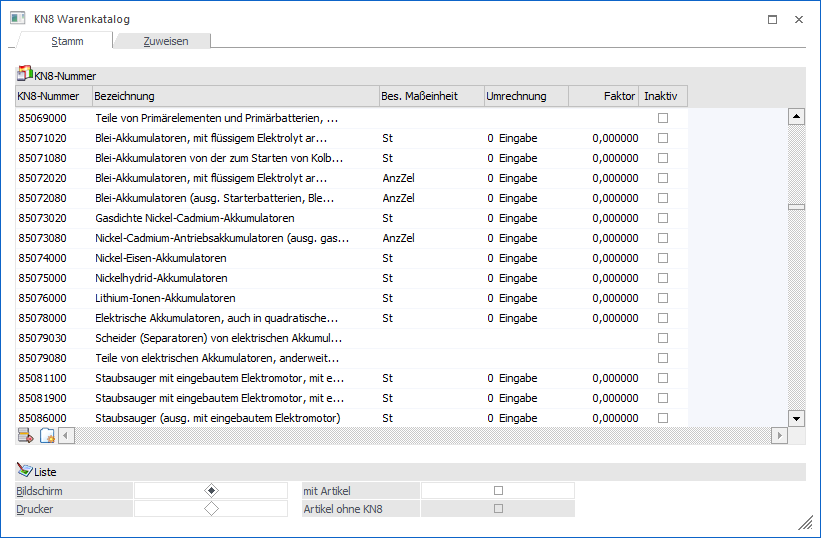
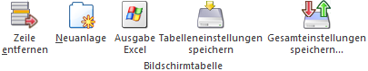
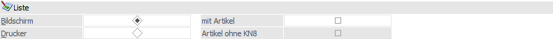
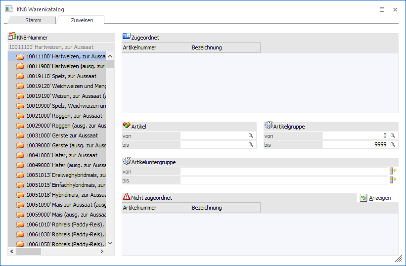
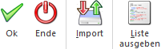

Im Menüpunkt…
1 WinLine FAKT
1 Stammdaten
1 KN8 Warenkatalog
… werden die vorgeschriebenen Warenbezeichnungen und Warennummern und auch die besondere Maßeinheit hinterlegt. Statt "Warennummer" wird in der WinLine von "KN8" bzw. "KN8-Nummer" gesprochen (KN8 = achtstellige Kombinierte Nomenklatur; die europäische Warenklassifikation).
Achtung
Die Liste der gültigen Warennummern (inklusive Warenbezeichnung und Maßeinheit) werden vom Statistischen Bundesamt zur Verfügung gestellt und jährlich geupdatet:
https://www.destatis.de/DE/Methoden/Klassifikationen/Aussenhandel/sova-leitdatei.html
Zur besseren Bedienung ist das Fenster ist in die folgenden Register unterteilt, welche nachfolgend beschrieben werden:
ü Register "Stamm"
ü Register "Zuweisen"
Register "Stamm"

Im Register "Stamm" können bestehende KN8-Nummern editiert und neue erstellt werden.
Tabelle "KN8-Nummer"
Ø KN8 Nummer
In dieser Spalte steht die vorgeschriebene Nomenklatur lt. Warenkatalog.
Ø KN8 Bezeichnung
In dieser Spalte befindet sich die vorgeschriebene Warenbezeichnung lt. Warenkatalog.
Ø Besondere Maßeinheit
Eine besondere Maßeinheit wird dann hinterlegt, wenn in der jeweils gültigen Fassung neben Kilogramm eine zusätzliche Maßeinheit gefordert wird (z.B. Stück, Liter, Meter). Nur in diesen Fällen erfolgt eine Eintragung, ansonsten bleibt das Feld frei. Darf für eine KN-Nummer KEINE besondere Maßeinheit gemeldet werden, dann muss in dieser Spalte der Eintrag "-" hinterlegt werden. Zur Angabe einer Besonderen Maßeinheit steht ein Matchcode zur Verfügung. Beim ersten Aufruf des Matchcodes wird dieser mit den, von der Statistik Austria veröffentlichten, Maßeinheiten befüllt.
Ø Umrechnung
Ist im Feld "Besondere Maßeinheit" ein Eintrag hinterlegt, so kann in diesem Feld die Umrechnung bestimmt werden. D.h. es können folgende Einträge gewählt werden:
ü 0 - Eingabe
ü 1 - Faktor1
ü 2 - Faktor2
ü 3 - Faktor3
Mit dem Eintrag "0 - Eingabe" wird festgelegt, dass die im Beleg erfasste Menge für die Intrastat-Meldung mit jenem Wert multipliziert wird, der in der Spalte "Faktor" angegeben ist.
Mit den Einträgen "1 - Faktor1" bis "3 - Faktor3" wird die Menge aus dem Beleg mit dem angegebenen Faktor (1, 2, oder 3) multipliziert.
Ø Faktor
Wurde in der Spalte "Umrechnung" der Eintrag "0 - Eingabe" gewählt, so kann nun in dieser Spalte der Umrechnungsfaktor angegeben werden. Mit diesem Faktor wird in weiterer Folge die Menge aus dem Beleg für die Intrastat-Meldung multipliziert.
Ø Inaktiv
Zum einen können KN8-Nummern manuell auf inaktiv gesetzt werden und zum anderen werden KN8-Nummern inaktiv gesetzt, wenn mittels "Import"-Funktion ein so genannter Abgleich der KN8-Nummern erfolgt.
Tabellenbuttons

Ø Zeile entfernen
Mittel Hilfe des Buttons "Zeile entfernen" können Zeilen aus der Tabelle (nach bestätigten einer Sicherheitsabfrage) entfernt werden.
Ø Neuanlage
Durch Anwählen des Buttons "Neuanlage" können neue Zeilen mit KN8-Nummern der Tabelle hinzugefügt werden.
Liste

Ø Bildschirm / Drucker
An dieser Stelle kann definiert werden, ob die Liste, welche per Button "Liste ausgeben" erzeugt werden kann, am Bildschirm oder auf den Drucker ausgegeben werden soll.
Ø mit Artikel / Artikel ohne KN8
An dieser Stelle kann definiert werden, ob auf der Liste, welche per Button "Liste ausgeben" erzeugt werden kann, …
ü … zusätzlich zu den KN8-Nummern auch die zugeordneten Artikel angezeigt werden sollen.
ü … auch Artikel ohne hinterlegter KN8-Nummer angedruckt werden sollen.
Register "Zuweisen"

Im Register "Zuweisen" können Artikeln direkt eine KN8-Nummer zuweisen. Anderenfalls muss dieses im Artikelstamm (WinLine FAKT - Stammdaten - Artikelstamm - Artikel - Register "Stamm" - Unterregister "Allgemein") direkt erfolgen (Eingabefeld "KN8-Nummer").
Achtung
Es werden nur jene Artikel in der Statistischen Meldung berücksichtigt, die eine KN8-Nummer hinterlegt haben. Zusätzlich muss im Artikelstamm das Gewicht pro Maßeinheit (Register "Text") festgelegt werden.
Buttons

Ø Ok
Durch Anwahl des Buttons "Ok" bzw. der Taste F5 werden die Einträge bzw. Veränderungen gespeichert und das Fenster geschlossen.
Ø Ende
Wird das Fenster mit dem Button "Ende" bzw. der Taste ESC geschlossen, so werden nicht gespeicherte Einträge verworfen.
Ø Import (ist nur im Register "Stamm" verfügbar)
Mittel Hilfe des Buttons "Import" können KN8-Nummern importiert werden (weitere Informationen dazu finden Sie im Kapitel KN8-Nummern Import).
Ø Liste ausgeben (ist nur im Register "Stamm" verfügbar)
Durch Anwählen des Buttons "Liste ausgeben" wird je nach Einstellung im Bereich "Liste" (Fußbereich des Fensters) diese entsprechend ausgegeben.